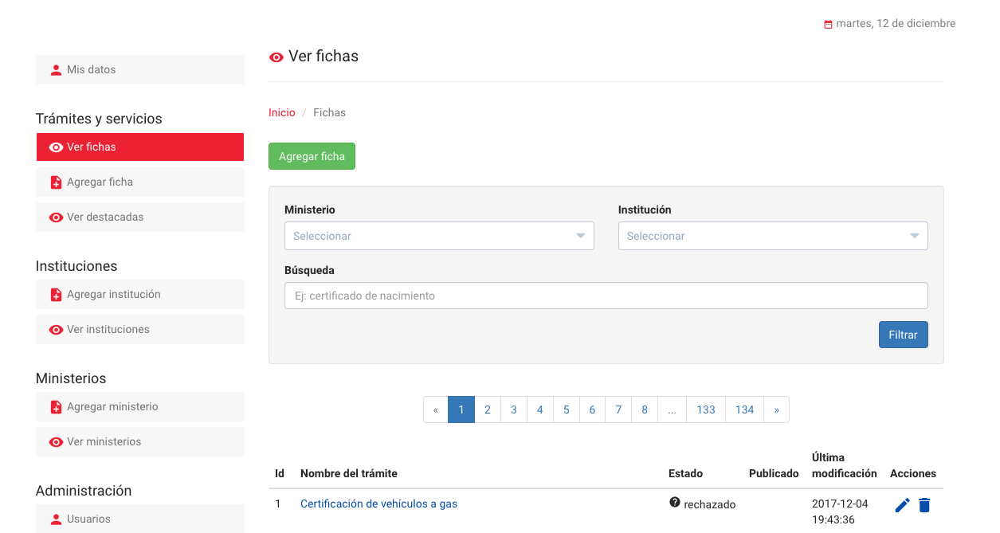
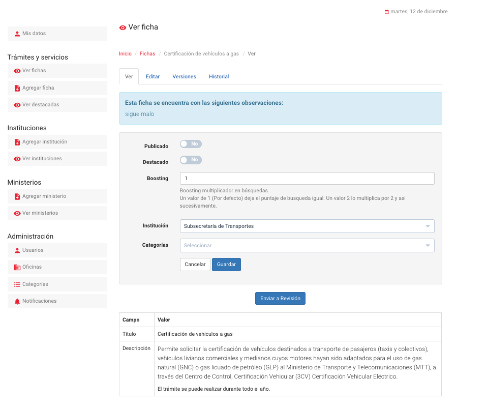
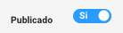
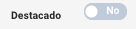
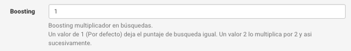
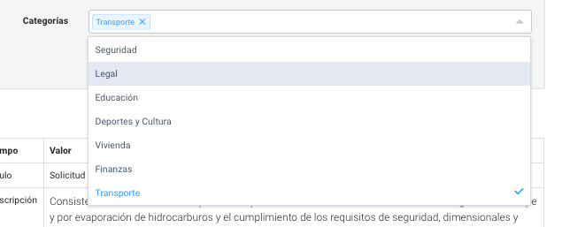
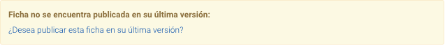
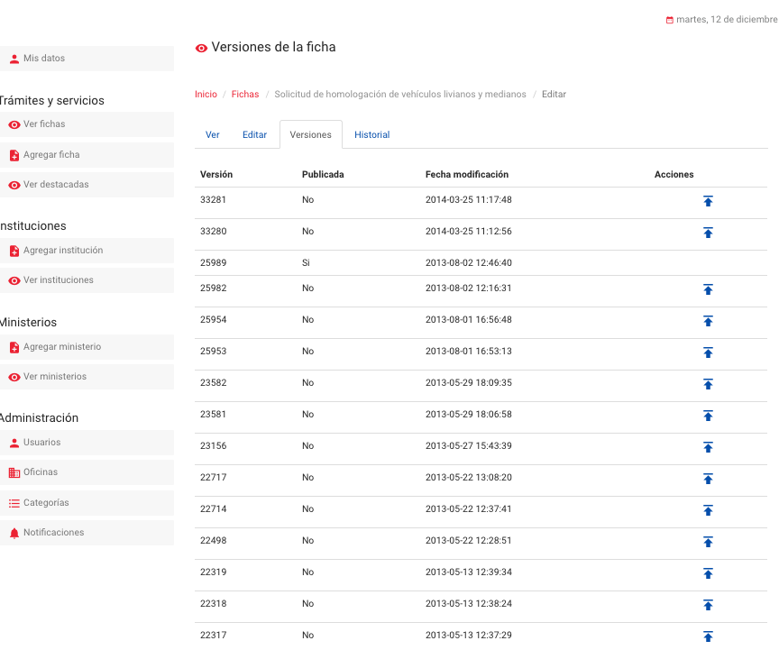
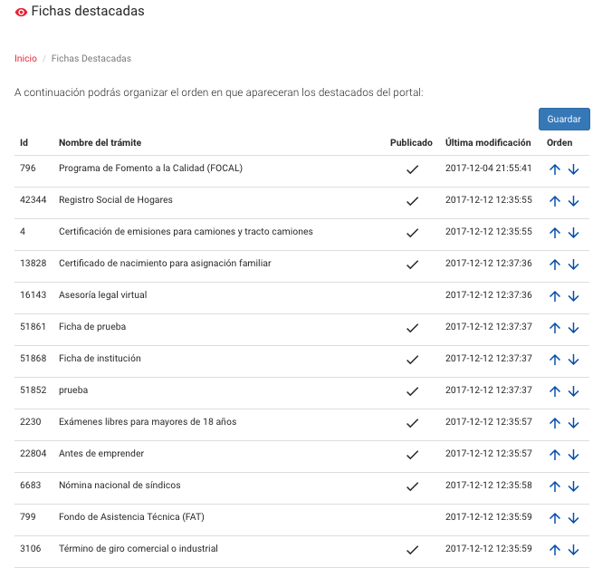

2.2. Publicación de Fichas (Editor ChileAtiende)
Las fichas corresponden al detalle de cada uno de los trámites publicados en el portal.
2.2.1 Ver Fichas
Desde esta opción se mostrarán todas y cada una de las fichas publicadas en el portal, se podrá ademas ver el estado, la última modificación si se encuentra publicado y si además se encuentra o no en su última versión
Estados de una Ficha:
- Publicada: cuando el administrador de la plataforma aprueba el contenido de una ficha y la publica en la plataforma.
- En_revisión: cuando una ficha fue editada por una contraparte y este la somete a aprobación por parte del administrador.
- Sin estado: cuando una ficha no se ha enviado para revisión o se encuentra aprobada
- Rechazado: cuando una ficha se rechazada por el administrador puede o no tener un motivo de rechazo.
Íconografía
Publicado:corresponde a una ficha que actualmente se encuentra publicada en la plataforma.
No última versión: únicamente aparece cuando una ficha no se encuentra publicada en su última versión
Editar: permite hacer cambios en las fichas
Eliminar: permite eliminar una ficha de trámite.
2.2.1.1 Agregar una ficha:

Desde esta ventana se pueden crar fichas nuevas seleccionando el botón "agregar ficha"
2.2.1.2 Acciones
Editar: permite hacer cambios en las fichas
Eliminar: permite eliminar una ficha de trámite.
2.2.2 Agregar Fichas
2.2.2.1 Pestaña ver
 A través de la pastaña ver el administrador podrá publicar, destacar agregar el multiplicadore de búsquedas, Editar la institución y seleccionar la categoría de una ficha.
Fichas en revisión: Cuando la contraparte termina la edición o creación de fichas las debe enviar a revisión por parte del administrador quien dará el visto bueno para publicación o rechazará la misma.
Rechazo de una ficha: en caso que el administrador considere que la ficha presenta comentarios y no puede ser publicada o aprobada, éste puede rechazarla a través del siguiente botón  , e inmediatamente deberá enviar observaciones a la contraparte indicando el motivo de su rechazo.
, e inmediatamente deberá enviar observaciones a la contraparte indicando el motivo de su rechazo.
 Una vez enviado el rechazo la contraparte podrá editar la ficha para nuevamente enviar a revisión.
Una vez enviado el rechazo la contraparte podrá editar la ficha para nuevamente enviar a revisión.
Aprobación de una ficha: Si la ficha esta correcta el administrador podrá aprobar la ficha para lo cual deberá seleccionar el botón
Una vez realizado este procedimiento la ficha no quedará publicada a menos que así lo seleccione el administrador.
Publicación de Fichas: Para publicar fichas, deben primero ser enviadas a revisión por parte del autor (Contraparte), una vez revisadas y aprobadas aparecerá un Switch que permitirá publicar o despublicar una ficha de trámite. 
Destacado de Ficha Una ficha destacada aparecerá en el portal en la sección detacada y mostrará la imagen adjunta en la ficha, por lo que es sumamente importante que la ficha la contenga. 
Boosting: Boosting multiplicador en búsquedas. Un valor de 1 (Por defecto) deja el puntaje de busqueda igual. Un valor 2 lo multiplica por 2 y asi sucesivamente. 
Categorización de trámites: la plataforma permite categorizar los trámites de acuerdo a un mantenedor de categorías que posee, para agregar una ficha a una determinada categoría el administrador deberá seleccionar en la lista una o más a las cuales pueda ser asociada la ficha.

Nota: si una ficha no se encuentra publicadaen su última version el sistema le mostrará una alerta al administrador indicandole el caso, y proporcionandole un link para poder publicar la última versión de la ficha.

2.2.2.2 Pestaña editar
Para editar se pueden modificar los siguientes campos correspondientes a la ficha:

- Título: Corresponde al nombre que tendrá la ficha
- Alias: Se asigna automáticamente, según el título asignado, sin embargo se puede editar.
- Fecha de actualización: corresponde a la fecha que se quiere aparezca en la plataforma como la fecha en la que se actualizó la ficha por última vez.
- Imagen: si la ficha se encuentra destacada esta imagen se muestra en la plataforma, también permite agregar una URL de la misma.
- Descipción: corresponde a la descripción de la ficha, generalmente contiene información general del trámite.

- Detalles: corresponde a los detalles del trámite si se desea expandir la información se completa este campo.
- Beneficiarios: corresponde a las personas a las cuales van dirigidas las fichas.

- Requerimientos: Campo de texto que permite listar los requerimientos asociados a una determinada ficha.
-
Guías: Son formas de realizar un determinado trámite, posee pestañas que quien crea la ficha deberá especificar la forma en la que el trámite puede ser ejecutado por los beneficiarios, entre las opciones que aparecen son:
- Online (deberá agregarse la URL del trámite)
- Oficina
- Telefónico
- Correo
- Consulado

-
Marco legal: brinda información legal que enmarca un determinado trámite.
- Keywords: palabras clave.
- Fichas relacionadas: Permite vincular fichas de trámites
Una vez completados los campos se deberá guardar los cambios.
En todo momento la ficha quedará en estado "Borrador" hasta que sea enviada a revisión en la pestaña de ver por parte del administrador y sea este quien apruebe y publique las fichas o por el contrario las rechace con algún comentario.
2.2.2.3 Pestaña Versiones
En esta vista se muestra la lista de versiones de una ficha en particular
 Desde esta ventana se puede publicar cualquiera de las versiones de la ficha a través del ícono
2.2.2.4 Pestaña Historial
En esta pestaña se visualizan modificaciones que ha sufrido la ficha a lo largo de sus versiones

2.2.3 Ver destacadas
A través de esta opción se listan las fichas destacadas su status de publicación, la fecha de su última modificación y se pueden ordenar.

Una vez realizadas las modificaciones en el órden de las fichas deberá seleccionarse el botón "Guardar"